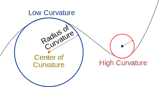

Algebră liniară și aplicații
Contents
Algebră liniară și aplicații#
Warning
Materialul curent este în lucru. Îl vom actualiza constant, pentru că vrem să-l îmbunătățim și să-l facem, pe de o parte, cît mai cuprinzător, dar în același timp, să necesite și un minimum posibil de preliminarii.
Totodată, materialul este un suport de curs, motiv pentru care este recomandabil să fie parcurs în colaborare cu autorii, echipa Poligon. Astfel, veți avea acces la soluțiile exercițiilor, unele detalii și observații care lipsesc din acest material și veți beneficia nu doar de varianta cea mai actualizată a cursului, dar și una cea mai potrivită nivelului vostru.
Prezentare generală#
Acest material este conceput ca un suport de curs care tratează subiecte de algebră liniară și aplicații. Însă noțiunile trebuie înțelese într-un sens foarte general și relaxat, deoarece ne propunem să abordăm subiectele din multiple unghiuri pe care rar le întîlnim în cursurile standard sau chiar în cărți.
Mai precis, materialul va conține trei direcții complementare de abordare, concentrate în:
istoria și filosofia conceptelor matematice studiate, a ideilor, problemelor și soluțiilor pe care acestea le-au ridicat;
conținut matematic abstract, pe care îl întîlnim în mod normal în cursuri universitare și care se bazează pe definiții, axiome, teoreme și demonstrații, precum și exerciții concepute pentru rezolvarea standard, cu creionul pe foaie;
aplicații computaționale, simbolice și de vizualizare, unde vom folosi limbaje de programare precum C++ și Python, cu ajutorul cărora vom ilustra metode moderne de calcul numeric, simbolic și de vizualizare. Altfel spus, vom vedea cum, cu ajutorul unor programe și biblioteci mai mult sau mai puțin sofisticate, ne putem ajuta atît în realizarea unor calcule numerice complicate – în special folosind vectori și matrice –, dar și în calcule simbolice și vizualizarea unor figuri bi- și tridimensionale.
În același timp, materialul își propune să separe, pe cît posibil, cele trei abordări de mai sus. Cu alte cuvinte, le vom structura oarecum independent, astfel încît studenții1 interesați doar de noțiunile matematice ori numai de aplicații în programare sau de istoria și filosofia matematicii să poată urmări capitolele corespunzătoare fără prea multe preliminarii și conexiuni cu celelalte părți ale materialului. Desigur, trebuie să adăugăm că sugestia noastră – care este și motivul pentru care am dat această structură materialului – este să se parcurgă toate capitolele, indiferent de ținta pe care și-o stabilește studentul, întrucît sîntem convinși că orice perspectivă suplimentară asupra aceluiași subiect nu poate fi decît benefică.
Motivație#
În cîteva cuvinte, explicăm motivația pentru care am construit acest material. Întîi de toate, așa cum se deduce și din paragrafele anterioare, sîntem de părere că o abordare multiplă asupra oricărui subiect nu poate fi decît benefică. Aceasta deoarece, în ciuda aparențelor, foarte rar o disciplină poate fi studiată complet izolat, fără legături, aplicații și implicații în raport cu alte discipline.
Poate chiar cel mai bun exemplu este acela al matematicii sau al oricărei științe ale naturii. De-a lungul istoriei, studiile științifice au început prin așa-numita filosofie naturală, diversificată și specializată ulterior în domeniile pe care astăzi le cunoaștem drept științe ale naturii (fizică, chimie, biologie ș.a.). Evoluția de la filosofia naturală a antichității la disciplinele pe care le cunoaștem și studiem astăzi a fost una marcată de un continuu dialog, care se bazează pe așa-numita metodă științifică:
cercetările încep cu observații empirice, pe care aproape oricine le poate face, dacă are disponibilitatea și curiozitatea necesare;
după observarea unui fenomen care atrage atenția, se caută explicații particulare: De ce stau lucrurile așa, de ce s-a întîmplat ceea ce am văzut?
observațiile particulare se doresc a fi înlocuite de teorii generale, care nu doar să explice situația concretă pe care am văzut-o, ci să poată prezice dacă și cînd o astfel de întîmplare s-ar putea repeta;
de îndată ce o teorie generală este disponibilă, adesea sînt căutate și alte aplicații ale teoriei respective, întrucît complexitatea poate fi înșelătoare; este posibil să se descopere multiple fenomene conexe ori care pot fi explicate complet ori parțial cu ajutorul unei teorii construite pentru un alt fenomen.
Așadar, de cele mai multe ori, descoperirile științifice încep cu o observație practică, formulată nu de puține ori în istorie cu ajutorul filosofiei, mitologiei ori chiar poeziei. Căutarea unei explicații particulare și mai ales a unei teorii generale face apel, cel mai adesea, la matematică. Însă noțiunile matematice sînt adaptate la context, astfel că se pot folosi în conjuncție cu noțiuni de fizică, chimie, biologie ș.a.m.d. În fine, explorarea diverselor aplicații posibile este un alt efort teoretic important. În funcție de complexitatea teoriei formulate, se pot găsi numeroase alte aplicații, uneori apărute la distanță mare în timp sau în discipline nebănuite.
Iată un exemplu concret: În jurul secolului al XVIII-lea, motivat de traiectorii balistice, adică ale proiectilelor, obuzelor sau chiar ale săgeților din arc, se căuta o teorie a curburii. Cercetătorii și chiar soldații obișnuiți observaseră că orice proiectil lansau, urmează o traiectorie curbă, deci nu zboară în linie dreaptă. Însă în perioada respectivă, cea mai mare parte a noțiunilor de geometrie și de mecanică se bazau pe linii drepte. Astfel că a fost nevoie de eforturile independente a trei matematicieni, germanul Carl Friedrich Gauss, maghiarul Janos Bolyai și rusul Nikolai Lobacevski pentru a se pune bazele unei teorii ale curburii. În lucrările lor, ei au arătat cum proprietatea unei traiectorii de a fi curbată poate fi cuantificată, adică măsurată cu un coeficient care o leagă de un cerc imaginar. Altfel spus, orice traiectorie curbată este considerată ca făcînd parte dintr-un cerc imaginar, a cărui rază, cu cît este mai mare, cu atît imprimă o curbură mai mică traiectoriei.
Se formaliza, astfel, ceea ce fusese observat încă din perioada Renașterii (cca. sec. XVI) și ceea ce astăzi numim traiectorie parabolică a unui proiectil în cazul unei aruncări oblice sau orizontale.
Însă teoria curburii a lui Gauss, Bolyai și Lobacevski a fost atît de importantă, încît la peste un secol distanță, ea și-a găsit o aplicație fascinantă: în teoria generală a relativității, prin Albert Einstein. În esență, această teorie este una pur matematică și mai precis, geometrică, care arată cum noțiuni abstracte privitoare la curbură se pot aplica direct spațiilor fizice și traiectoriilor particulelor (în special, chiar luminii).
Detalii privitoare la istoria și ramificațiile acestor descoperiri depășesc scopurile prezentei lucrări, însă în orice caz, se evidențiază foarte clar pașii corespunzători metodei științifice, dintre care evidențiem meritele unor perspective diverse asupra aceluiași concept – în cazul de față, curbura.
Așadar, în rezumat, considerăm că o perspectivă care să țină cont de mai multe discipline, eventual cu metode de lucru diferite nu poate fi decît binevenită și îmbogățește semnificațiile pe care le au conceptele prezentate. Subiectiv vorbind, considerăm că este mereu o surpriză plăcută să vedem cum noțiuni pe care le credeam specifice unor discipline abstracte își găsesc corespondent înrudit în alte direcții. Un exemplu concret care să ilustreze acest ultim punct este cel privitor la curbele numite „hiperbolă“ și „parabolă“, două cuvinte pe care le întîlnim și în romane sau poezii, de pildă. Probabil veți fi surprinși să aflați că noțiunile sînt strîns legate între ele: hiperbola și parabola, drept curbe conice, așa cum sînt studiate în matematică, au multe elemente în comun cu procedeele stilistice cu același nume – o conexiune pe care o vom detalia la momentul potrivit.
- 1
Vom folosi termenul generic de „student“ pentru a ne referi la oricine parcurge materialul nostru. Însă, în ce privește conținutul propriu-zis, scopul nostru este să alcătuim un material care să poată fi parcurs cu aproximativ aceeași ușurință și de elevi de liceu, și de studenți la facultăți tehnice sau nu, precum și de profesioniști, autodidacți sau, în general, curioși de toate vîrstele.